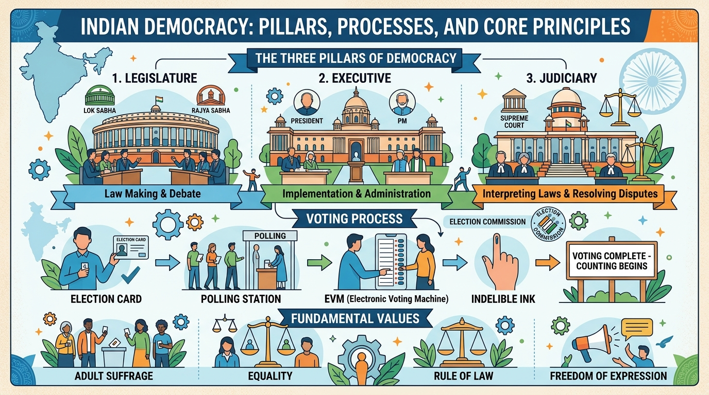
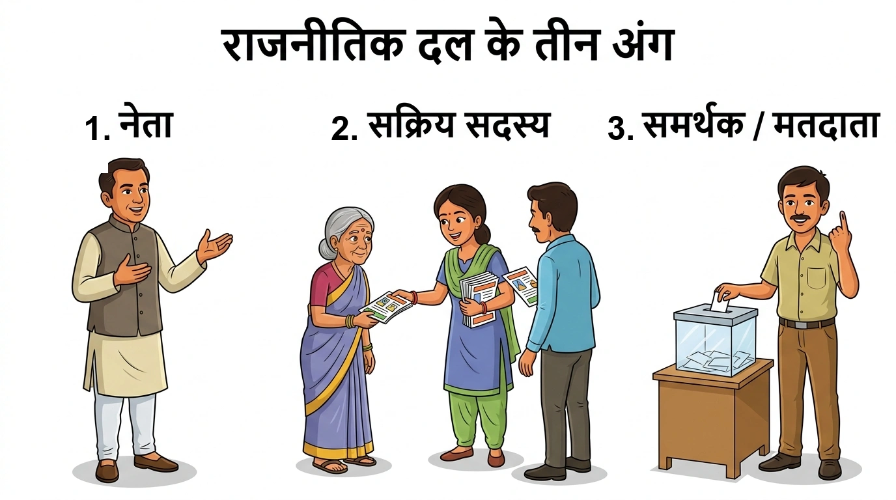
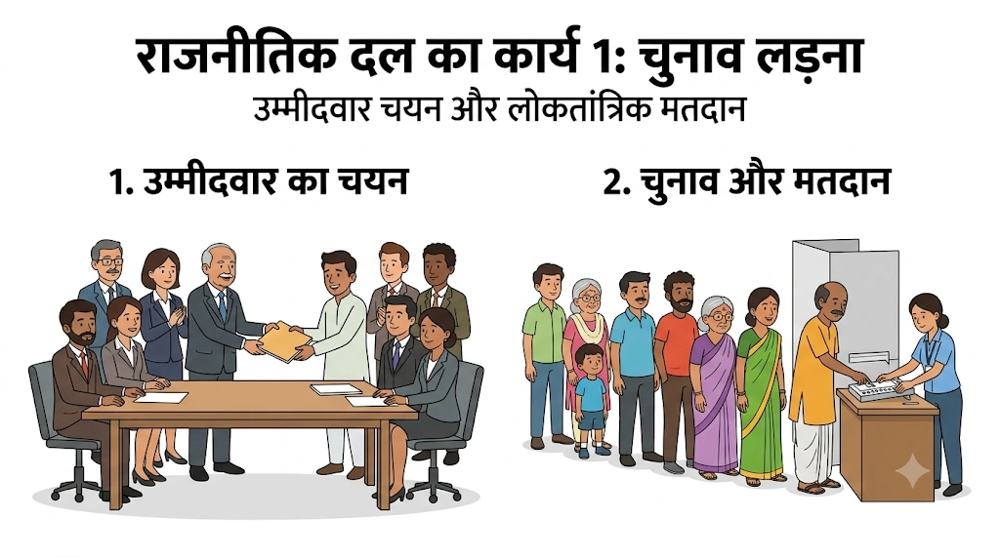
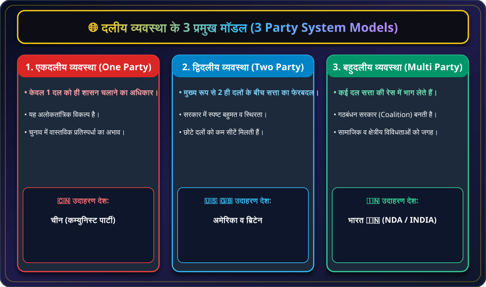
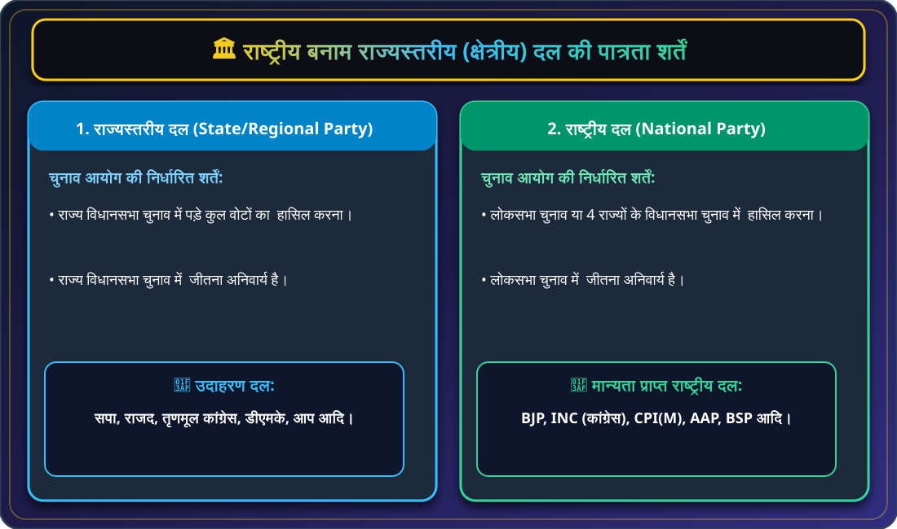
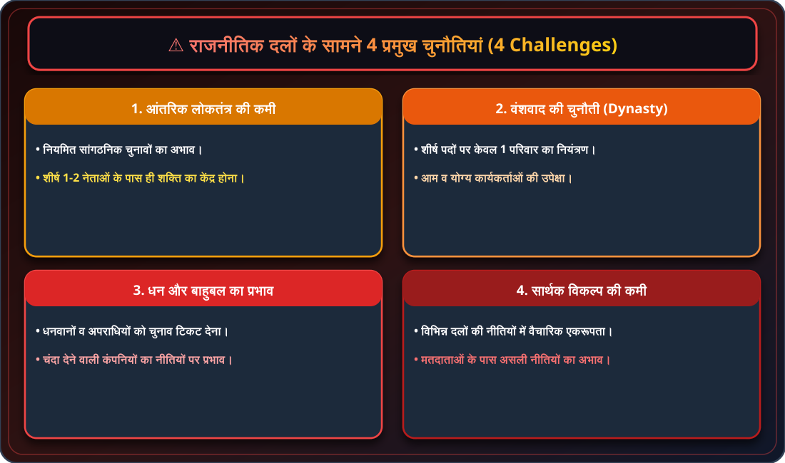
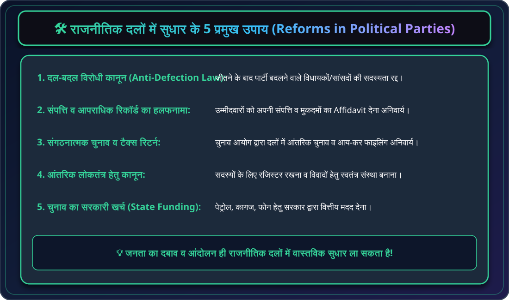

🏛️ कक्षा 10 राजनीति विज्ञान (लोकतांत्रिक राजनीति-2)
अध्याय 4: राजनीतिक दल (Political Parties) - मास्टर नोट्स

🇮🇳 भारतीय लोकतंत्र: 3 प्रमुख स्तंभ, वयस्क मताधिकार एवं मतदान प्रक्रिया (EVM & Election)
विधायिका, कार्यपालिका व न्यायपालिका का संतुलन + मतदाता पहचान पत्र से लेकर मतदान केंद्र व ईवीएम द्वारा निष्पक्ष चुनाव।

📢 चित्र 4.1: राजनीतिक दल के 3 प्रमुख अंग (1. नेता, 2. सक्रिय सदस्य, 3. समर्थक/मतदाता)
1. नेता: दल की नीतियां तय करने वाले मार्गदर्शक | 2. सक्रिय सदस्य: जमीनी स्तर पर काम करने वाली रीढ़ | 3. समर्थक/मतदाता: दल की विचारधारा में विश्वास रखने वाले नागरिक।

🗳️ चित्र 4.2: राजनीतिक दल का कार्य 1 - चुनाव लड़ना और उम्मीदवार चयन (Contesting Elections)
1. उम्मीदवार का चयन: दल द्वारा योग्य प्रत्याशी को टिकट देना | 2. चुनाव और मतदान: नागरिकों द्वारा कतार में लगकर शांतिपूर्ण व निष्पक्ष मतदान।

🌐 चार्ट 4.2: दलीय व्यवस्था के 3 मॉडल (Party System Models)
एकदलीय (चीन), द्विदलीय (अमेरिका/ब्रिटेन) एवं बहुदलीय व्यवस्था (भारत 🇮🇳)।

🏛️ चार्ट 4.3: राष्ट्रीय बनाम राज्यस्तरीय दल की पात्रता शर्तें (ECI Criteria)
राज्य दल: विधानसभा में 6% वोट + 2 सीटें | राष्ट्रीय दल: लोकसभा/4 राज्यों में 6% वोट + 4 सीटें।

⚠️ चार्ट 4.4: राजनीतिक दलों के सामने 4 प्रमुख चुनौतियां (4 Challenges)
आंतरिक लोकतंत्र की कमी, वंशवाद, धन व बाहुबल का प्रभाव एवं सार्थक विकल्प की कमी।

🛠️ चार्ट 4.5: राजनीतिक दलों में सुधार के 5 प्रमुख उपाय (5 Electoral Reforms)
दल-बदल विरोधी कानून, हलफनामा (Affidavit), संगठनात्मक चुनाव, आंतरिक कानून व चुनाव का सरकारी खर्च।
💡 बोर्ड परीक्षा हेतु अति-महत्वपूर्ण तथ्य (Quick Exam Takeaways)
- दल-बदल (Defection): चुनाव जीतने के बाद किसी विधायिका से दूसरे दल में चले जाना।
- हलफनामा (Affidavit): शपथ पत्र पर अपनी संपत्ति व मुकदमों का आधिकारिक ब्योरा देना।
- गठबंधन (Alliance/Front): चुनाव लड़ने हेतु कई दलों का हाथ मिलाना (उदा. NDA, INDIA)।
- राष्ट्रीय दल: BJP, INC, CPI(M), AAP (लोकसभा/4 राज्यों में 6% वोट + 4 सीटें)।
- राज्य दल: सपा, राजद, तृणमूल कांग्रेस, डीएमके (विधानसभा में 6% वोट + 2 सीटें)।